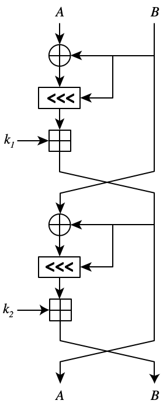

Below is a dataflow diagram of one round in a permutation. All datatypes are uint32_t. The circles are xor, the squares are addition, the rectangles are left rotate. The additions are computer addition (ie, with the free uint32_t that adding two uint32_t values gives you). The number of bits to rotate is determined by the side arrow mod 32. Complete the code that implements one round.

code: Question 1
answer: Question 1 Answer
Back